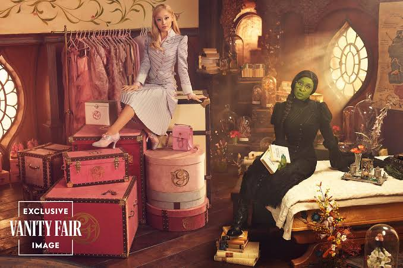

Elegí a tu personaje
Elphaba o Glinda
INICIO
SINÓPSIS
En la mágica tierra de Oz, Elphaba y Glinda se conocen en la Universidad de Shiz y, a pesar de sus profundas diferencias, forman una inesperada amistad. Mientras descubren los secretos detrás del poder del Mago de Oz, sus caminos comienzan a separarse hasta convertirse en las figuras que el mundo conocerá como la Bruja Mala del Oeste y Glinda la Buena. Años después, deberán enfrentar las consecuencias de sus decisiones, reencontrarse y luchar por el futuro de Oz, poniendo a prueba el vínculo que las unió desde el principio.
CONTEXTO
Wicked es una adaptación cinematográfica del exitoso musical de Broadway creado por Stephen Schwartz, compositor y letrista de sus canciones, y con libreto de Winnie Holzman. A su vez, el musical está basado en la novela Wicked: The Life and Times of the Wicked Witch of the West (1995), escrita por Gregory Maguire, quien reinterpretó el universo de El maravilloso mago de Oz de L. Frank Baum.
La historia funciona como una precuela de El mago de Oz, ya que transcurre principalmente antes de la llegada de Dorothy a Oz y presenta una nueva mirada sobre los orígenes de Elphaba y Glinda, conocidas posteriormente como la Bruja Mala del Oeste y Glinda la Buena.
